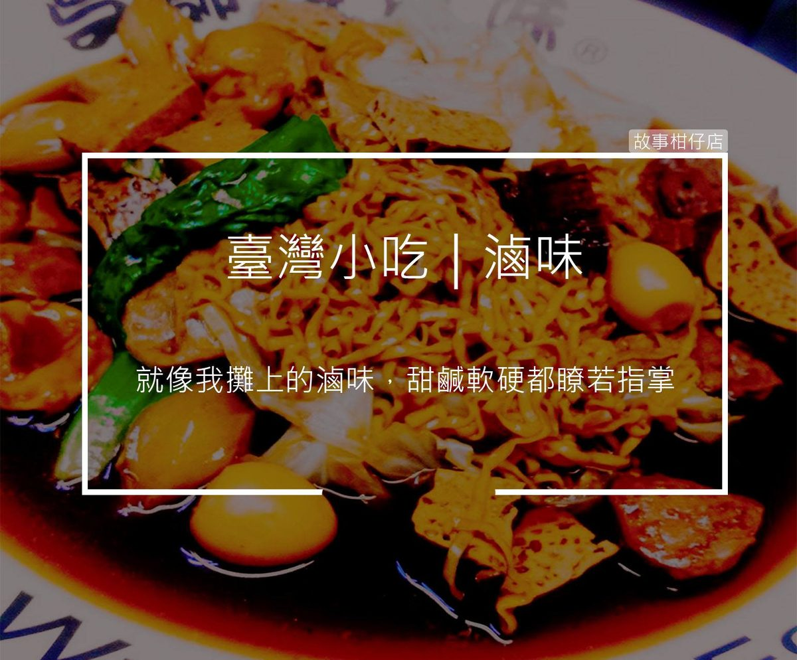

老王滷味

今日菜單：老王滷味
你到滷味攤必點的品項，還有必加的調料是什麼呢？分享給老闆我吧！
〈老王滷味〉
大家好，我是老王，認識我的都叫我王仔。
這家滷味攤，我已經開了二十幾年，位在某間遠離城市的大學旁邊，這麼多年來我培養一身技藝，滷味的功夫就不用說了，我說的是看人的眼光。
前面這位小姐來兩年了，從她穿著保守，給錢時從不看我眼睛，加上每次都是大辣不酸菜，可以推測出她個性應當頗壓抑，在系上不太出席活動，但只要認識就會幫你兩肋插刀的那型。
後面站的那個大男孩，高大挺拔，出現必定球褲短T，頭戴NIKE帽，腳穿adidas，點餐都亂點三四大盤，給身邊的嘍囉吃個痛快，這種人很明顯就是個富二代傻子，內心寂寞用錢買朋友那型，而且我跟你打賭，他籃球也打得很差。
來攤子的每個人，我兩三下就能看穿他們，就像我攤上的滷味，是甜、是鹹、是硬、是軟都瞭若指掌。若再加上每個人挑選的食物與調味，更能深入剖析他們的心。
不過，有個女人，我始終都看不穿她。
十幾年前，那天雨下得很大，大到你人生都會絕望的那種，這個女人就撐著一把大傘，走到我攤前，點了王子麵後，就坐下等待，看著她鬢角滴著水，深褐色的褲子濕去一半，露出半截白緻細嫩的小腿，整個造型就像個滷過的筊白筍。
就我專業的判斷，她一定是剛分手，家當款款準備直接逃學，送上王子麵時，我還霸氣的招待菜頭跟大陸妹。加上這句話：「男人一時的啦，長這麼漂亮，手再招招就一大把了，別想太多。」
女人聽了半點反應也無，只默默地吃著麵，早知不耍帥的我，只好尷尬的裝忙，而她就這樣一路坐到我收攤。
「你家可以借我躲躲雨嗎？」
在我受不了打算跟她收錢閃人的時候，這句話悠悠地飄了過來。
今天也下著跟那天一樣大的雨，那個女人又出現在我攤前，拿了櫃子裡所有的錢準備轉身就走。
「老公多賺點，不夠花。」
到如今我還是看不穿她，卻明白了從那天起，我早跟那包麵一起被推入鍋中，一天天的被滷著。
尋訪臺灣小吃，勾勒美食地圖
故事柑仔店，與您一起來完成！
★ Photo credit：#吳師傅魯味～淡水店